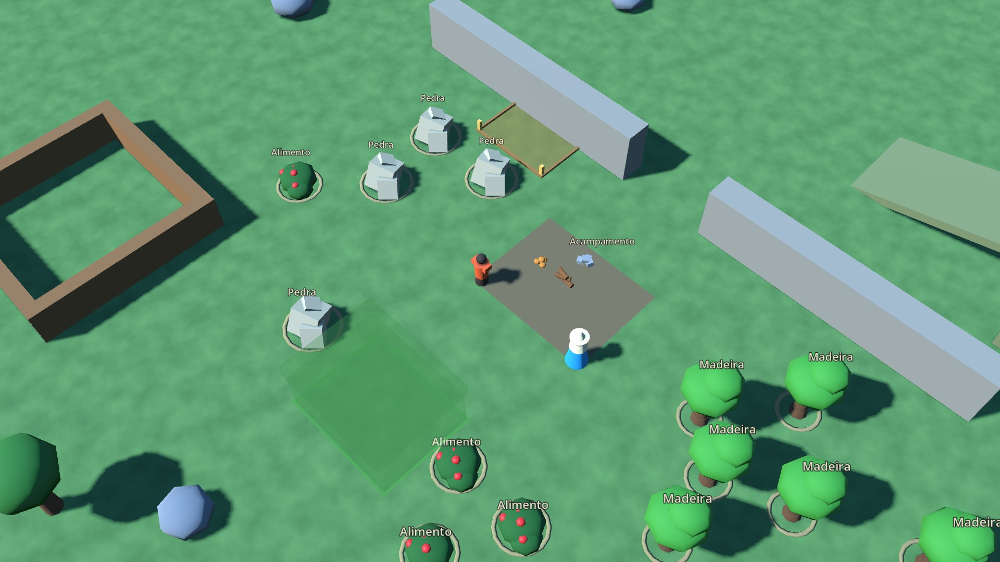
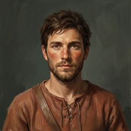

24Madeira
14Pedra
18Alimentos
Nível I · Acampamento
Ano I · Ciclo 1 (T4)
||
1×
2×
4×
● Exposto
Terreno Válido
Depósito Rústico (5×4 m)
Clique esq. assentar · Clique dir. / Esc cancelar
Canteiro em Ergimento
Abrigo Básico
42%
Madeira no canteiro12 / 12
Pedra no canteiro6 / 6
Construtores (D9)1 / 2 · Alden
Complementar (DEC-11B)
Cancelar Obra (D3)
Nível I · Acampamento
Nível II · Propriedade (Proposta)
Nível III (Proposta)

4×4 m · 30 s
Abrigo Básico
Lar inicial · máx. 2 trab.
12 Mad·6 Ped
Em Mãos

5×4 m · 45 s
Depósito Rústico
Protege 50/50/30 (T3.7)
18 Mad·10 Ped

Casa · 2

Alden
Livre

Brena
Coletando
Construir
Maquetes · [B]
Tarefas[T]
Linhagem[H]